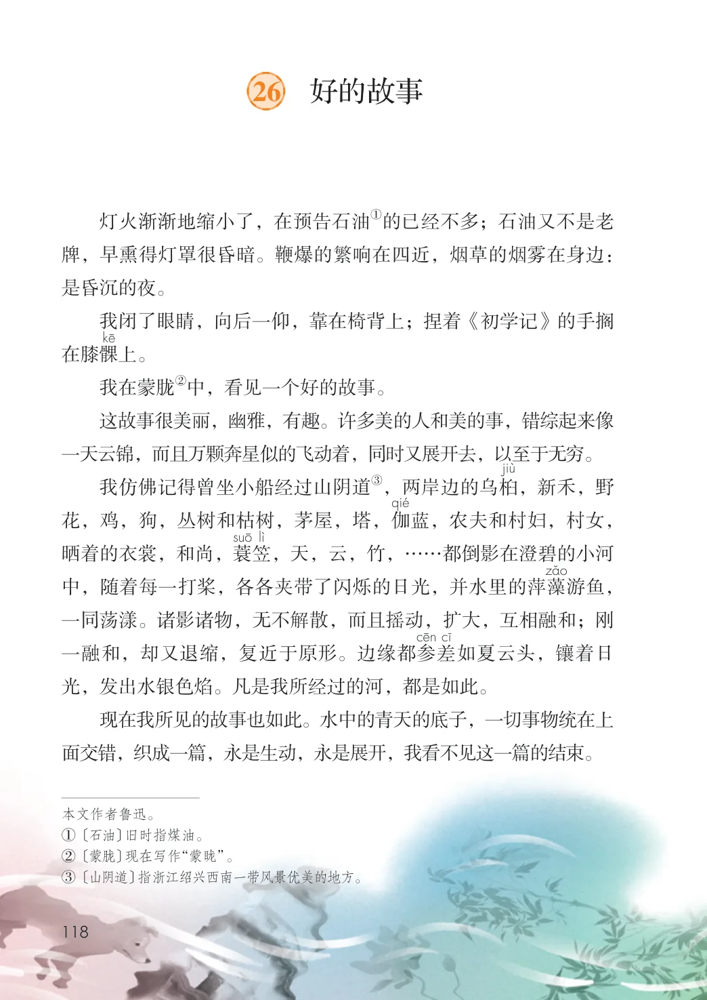
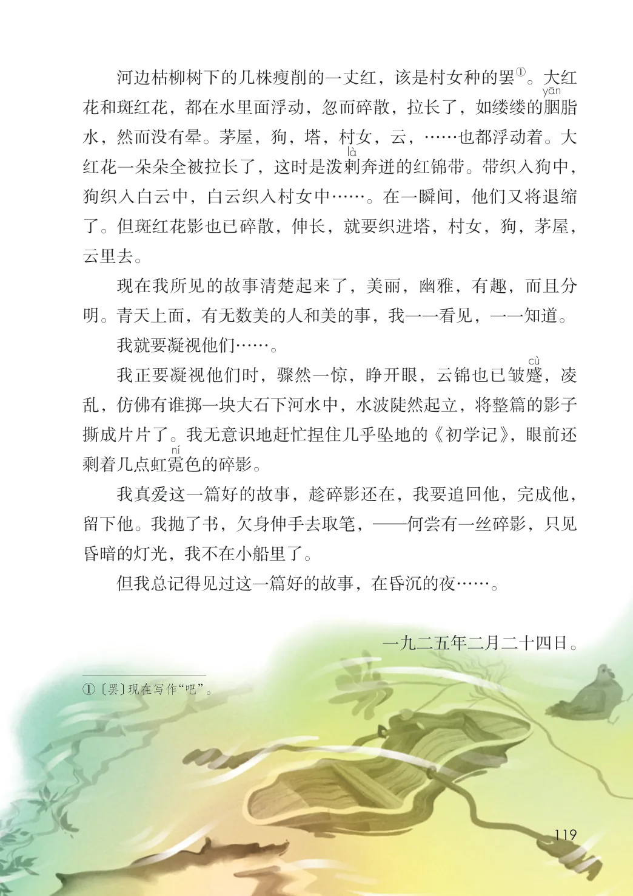
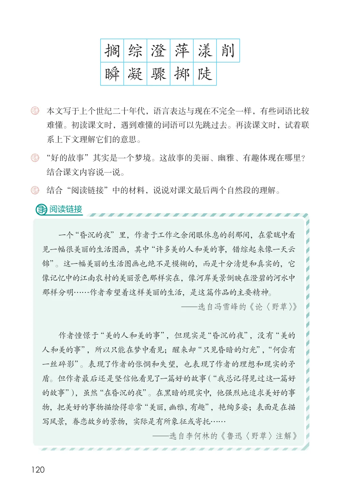

第八单元 · 第 26 课
好的故事
文字内容 PDF 第 123 页
①的已经不多；石油又不是老灯火渐渐地缩小了，在预告石油牌，早熏得灯罩很昏暗。鞭爆的繁响在四近，烟草的烟雾在身边：是昏沉的夜。
我闭了眼睛，向后一仰，靠在椅背上；捏着《初学记》的手搁在膝髁上。
②中，看见一个好的故事。我在蒙胧
这故事很美丽，幽雅，有趣。许多美的人和美的事，错综起来像一天云锦，而且万颗奔星似的飞动着，同时又展开去，以至于无穷。
③，两岸边的乌桕我仿佛记得曾坐小船经过山阴道，新禾，野花，鸡，狗，丛树和枯树，茅屋，塔，伽蓝，农夫和村妇，村女，晒着的衣裳，和尚，蓑笠，天，云，竹，……都倒影在澄碧的小河中，随着每一打桨，各各夹带了闪烁的日光，并水里的萍藻游鱼，一同荡漾。诸影诸物，无不解散，而且摇动，扩大，互相融和；刚一融和，却又退缩，复近于原形。边缘都参差如夏云头，镶着日光，发出水银色焰。凡是我所经过的河，都是如此。
现在我所见的故事也如此。水中的青天的底子，一切事物统在上面交错，织成一篇，永是生动，永是展开，我看不见这一篇的结束。
文字内容 PDF 第 124 页
①。大红河边枯柳树下的几株瘦削的一丈红，该是村女种的罢花和斑红花，都在水里面浮动，忽而碎散，拉长了，如缕缕的胭脂水，然而没有晕。茅屋，狗，塔，村女，云，……也都浮动着。大红花一朵朵全被拉长了，这时是泼剌奔迸的红锦带。带织入狗中，狗织入白云中，白云织入村女中……。在一瞬间，他们又将退缩了。但斑红花影也已碎散，伸长，就要织进塔，村女，狗，茅屋，云里去。
现在我所见的故事清楚起来了，美丽，幽雅，有趣，而且分明。青天上面，有无数美的人和美的事，我一一看见，一一知道。
我就要凝视他们……。
我正要凝视他们时，骤然一惊，睁开眼，云锦也已皱蹙，凌乱，仿佛有谁掷一块大石下河水中，水波陡然起立，将整篇的影子撕成片片了。我无意识地赶忙捏住几乎坠地的《初学记》，眼前还剩着几点虹霓色的碎影。
课后练习
- 我真爱这一篇好的故事，趁碎影还在，我要追回他，完成他，留下他。我抛了书，欠身伸手去取笔，—何尝有一丝碎影，只见昏暗的灯光，我不在小船里了。但我总记得见过这一篇好的故事，在昏沉的夜……。一九二五年二月二十四日。① 〔罢〕现在写作“吧”。
文字内容 PDF 第 125 页
搁综澄萍漾削瞬凝骤掷陡本文写于上个世纪二十年代，语言表达与现在不完全一样，有些词语比较难懂。初读课文时，遇到难懂的词语可以先跳过去。再读课文时，试着联系上下文理解它们的意思。“好的故事”其实是一个梦境。这故事的美丽、幽雅、有趣体现在哪里？
阅读链接
一个“昏沉的夜”里，作者于工作之余闭眼休息的刹那间，在蒙眬中看
见一幅很美丽的生活图画，其中“许多美的人和美的事，错综起来像一天云
锦”。这一幅美丽的生活图画也绝不是模糊的，而是十分清楚和真实的，它
像记忆中的江南农村的美丽景色那样实在，像河岸美景倒映在澄碧的河水中
那样分明……作者希望着这样美丽的生活，是这篇作品的主要精神。
—选自冯雪峰的《论〈野草〉》
作者憧憬于“美的人和美的事”，但现实是“昏沉的夜”，没有“美的
人和美的事”，所以只能在梦中看见；醒来却“只见昏暗的灯光”，“何尝有
一丝碎影”。表现了作者的怅惘和失望，也表现了作者的理想和现实的矛
盾。但作者最后还是坚信他看见了一篇好的故事（“我总记得见过这一篇好
的故事”），虽然“在昏沉的夜”。在黑暗的现实中，他强烈地追求美好的事
物，把美好的事物描绘得非常“美丽，幽雅，有趣”，艳绚多姿；表面是在描
写风景，眷恋故乡的景物，实际是有所象征或寄托……
—选自李何林的《鲁迅〈野草〉注解》
课后练习
- 结合课文内容说一说。
- 结合“阅读链接”中的材料，说说对课文最后两个自然段的理解。
原版对照
原书页面与全部插图
点击图片可查看大图。


